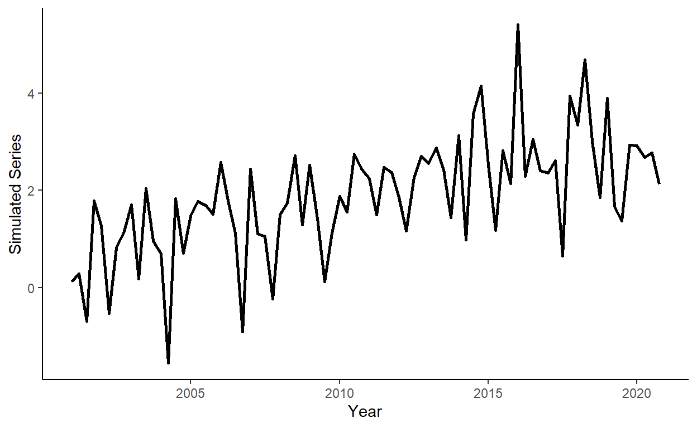

Tutorial 4: Trends
In this tutorial, we will generate trending series that, moreover, also exhibit some seasonal pattern. We will apply an information criterion to select the most suitable model, and we will obtain and evaluate one-step-ahead forecasts using a rolling window procedure. To run the code, the data.table, ggplot2 and fastDummies packages need to be installed and loaded.
Let’s generate a quarterly time series that follows: \(y_{t} = 0.05t+0.0002t^2+0.7d_{1,t}+e_{t}\), where \(d_{1,t}=1\) if \(t\) is in quarter \(1\), and \(d_{1,t}=0\) otherwise; \(e_{t} \sim iid~\text{N}(0,1)\), for \(t=1,\ldots,80\).
n <- 80
s <- 4
set.seed(1)
e <- rnorm(n,0,1)
trend <- c(1:n)
dum <- rep(c(1,0,0,0),n/s)
y <- 0.05*trend-0.0002*trend^2+.7*dum+eStore \(y\) and \(trend\) in a data.table, call it ‘dt’. Add some arbitrary dates to the data (e.g., suppose we deal with a series beginning from quarter 1 of 2001).
Plot the realized time series using the ggplot function.

Add quarterly dummy variables to the data, and calculate Akaike Information Criteria (AIC) for linear and quadratic trend models with and without quarterly seasonal dummy variables (so, four models in total). Observe that the linear trend model with the seasonal component offers the best in-sample fit, based on AIC.
dt$q <- quarter(dt$date)
dt <- dummy_cols(dt,select_columns="q")
reg1 <- lm(y~trend,data=dt)
reg2 <- lm(y~trend+I(trend^2),data=dt)
reg3 <- lm(y~trend+q_1+q_2+q_3,data=dt)
reg4 <- lm(y~trend+I(trend^2)+q_1+q_2+q_3,data=dt)
aic1 <- log(crossprod(reg1$residuals))+2*length(reg1$coefficients)/n
aic2 <- log(crossprod(reg2$residuals))+2*length(reg2$coefficients)/n
aic3 <- log(crossprod(reg3$residuals))+2*length(reg3$coefficients)/n
aic4 <- log(crossprod(reg4$residuals))+2*length(reg4$coefficients)/nGenerate a sequence of one-step-ahead forecasts from the linear trend model with seasonal dummy variables, using the rolling window scheme, where the first rolling window ranges from period 1 to period 60 (i.e., 75% of the data).
dt$f <- NA
R <- 60
P <- n-R
for(i in 1:P){
reg3 <- lm(y~trend+q_1+q_2+q_3,data=dt[i:(R-1+i)])
dt$f[R+i] <- reg3$coef[1]+reg3$coef[2]*dt$trend[R+i]+reg3$coef[3]*dt$q_1[R+i]+reg3$coef[4]*dt$q_2[R+i]+reg3$coef[5]*dt$q_3[R+i]
}Plot the original series and the one-step-ahead forecasts on the same graph. Note, for convenience we will first ‘melt’ the data into the ‘long table’ format, then plot the data.
dl <- melt(dt[,.(date,y,f)],id.vars="date")
ggplot(dl,aes(x=date,y=value,color=variable,linetype=variable))+
geom_line(size=1,na.rm=T)+
scale_color_manual(values=c("darkgray","coral"))+
scale_linetype_manual(values=c(1,5))+
labs(x="Year",y="Trending Seasonal Series and Forecasts")+
theme_classic()+
theme(legend.title=element_blank(),legend.position=c(.15,.85))Test the hypotheses of forecast unbiasedness, efficiency, and no serial correlation of forecast errors.
## Estimate Std. Error t value Pr(>|t|)
## (Intercept) 0.1061465 0.1007144 1.053936 0.2951249## Estimate Std. Error t value Pr(>|t|)
## (Intercept) 2.1966728 1.8297135 1.200556 0.2454854
## f -0.6922787 0.5997203 -1.154336 0.2634587## Estimate Std. Error t value Pr(>|t|)
## (Intercept) 0.11994115 0.1029770 1.1647377 0.2477210
## e1 -0.03933125 0.1138245 -0.3455429 0.7306285